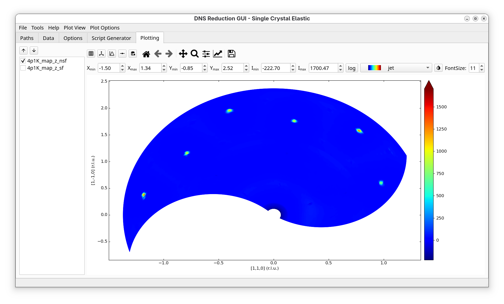
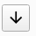
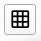
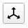
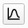
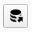

DNS Single Crystal Elastic - Plotting Tab#
The Plotting tab offers basic plotting functionality for reduced datasets.
{kind=link}

On the left of this tab, a list with different channels of the reduced dataset is shown and the user can select which channel to display.
The buttons below the Plotting tab have the following functionality (from left to right):
Option |
Description |
|---|---|
 / File selector |
Move through single plots using down or up arrow. |
 Grid selector |
Toggle through different grid sizes. |
 Grid style selector |
Enable/disable crystalographic principal axes laying in the horizontal scattering plane. It works only if two principle axes change in the horizontal plane. |
 Projection selector |
Turn on/off projections of the intensity function along \(x\) and \(y\) directions. |
Data display style selector |
Toggle through drawing of borders of the triangles or quadrilaterals of the plot. The following modes are available: a) no border, b) white border, c) black border (one might have to zoom in in order to see data). In addition, when the Scatter mode is activated (“Plot View” -> “Plot Type” -> “Scatter”), this button can be used to change the size of the displayed datapoints. |
 Data export selector |
Export the shown plot as an ascii file to the directory specified for exports in the Path tab. |
The rest of the buttons have the same functionality as in matplotlib’s navigation toolbar.
When the mouse cursor hovers over the plot, the cursor’s \((x, y)\) coordinates together with the corresponding \(hkl\) values (in relative lattice units, r.l.u.) will be displayed to the right of matplotlib’s control buttons. In addition, the intensity value (with an error-bar) of the closest measured data point will also be shown. Note that when interpolation is enabled (either in triangulation or quadrilateral mode), the displayed intensity value will not include the error estimate. Furthermore, since triangulation does not create triangles centered at the measured data points, the error estimate is not displayed in this mode either.
The input fields labeled \(\mathbf{X_{min}/X_{max}}\), \(\mathbf{Y_{min}/Y_{max}}\) and \(\mathbf{I_{min}/I_{max}}\), located below the navigation buttons, allow you to manually specify the region to zoom into. Once the desired values are entered, pressing the Enter key in any input field will update the plot.
The log button next to \(\mathbf{I_{max}}\) turns on/off the logarithmic intensity scale. The dropdown list nearby to the log button allows to select different colormaps for visualisation. The button next to the dropdown list inverts the colormap color scale. The FontSize dialog allows to change the fontsize of the legend (the Enter key has to be pressed inside the fontsize box for the change to have an effect).
The Plot View menu, which can be accessed from the main menu of the “DNS Reduction” GUI, offers control over the style of the plot.
The Plot Type menu of Plot View can be used to toggle between Triangulation, Quadmesh, and Scatter display modes. When Triangulation is activated, the map is created out of triangles build between the measured points by Delaunay-triangulation. This mode works with any kind of data distribution, but is the slowest. Quadmesh builds the map out of quadrilaterals, which is much faster and this mode is used by the old “dnsplot” software. For this mode to operate properly, the number of data points in the \(\omega\) space for each of the selected \(2 \theta\) positions must be the same, otherwise quadrilaterals are not well defined. The Scatter mode can be used to display the measured data points.
The Axes menu of Plot View allows to change the plot axes between (\(n_x\) and \(n_y\)), as given in the Options, or (\(q_x, q_x\)), or (\(2 \theta, \omega\)). In addition, Fix Aspect Ratio can be selected to fix the aspect ratio between the \(x\) and \(y\) axis of the plot. This is especially usefull if crystallographic axes are used since then the shown angles will be correct. Switch Axes will switch \(x\) and \(y\) axes in the plot. Fix Aspect Ratio is not available in (\(2 \theta, \omega\)) mode.
The Interpolation menu of Plot View allows to generate additional triangles/quadrilaterals in order to make the plot look smoother. For example, if 1->9 option is selected, each quadrilateral will be replaced by 9 quadrilaterals, and so on. In this case, the data points will be interpolated using the RectBivariateSpline() method of the scipy library. The interpolation grid is generated by splitting the original data point range of each dimension into uniformly distributed intevals in such a way that the amount of geterated data points in each dimension is 3 times larger than the original amount.
The Gourad Shading checkbox can be used to toggle the shading on and off. If Gourad Shading is off, each quadrilateral will have a solid color, determined by the average of the intensity of the datapoints. If Gourad Shading is checked, the color will be smeared out inside the qualiteral towards its corners, giving a smoother change of color.
The Synchronize zooming menu allows to synchronize the zooming betweeen different scattering channels. If Synchronize zooming is turned on for a specific axis and the user zooms in into a specific region of the plot, then the synchronous zooming will be performed for each plot corresponding to different scattering channels.
The Plot Options menu can be used to toggle between Change \(\mathbf{\omega}\) offset and Change d-spacings modes. Change \(\mathbf{\omega}\) offset activates a finder dialog, using which the user can interactively change the \(\omega\) offset of the actual plot in order to search for the correct offset value. The changes achieved this way will be only temporary and will not be applied to all scattering channels. Therefore, once an appropriate value of the \(\omega\) offset is found, it is suggested that the user switches back to the Options tab, sets the proper values of the \(\omega\) offset in the Orientation groupbox, and re-runs the script. Change d-spacings allows the user to adjust the d-spacing of \(n_x\) and \(n_y\). The corresponding changes will be also temporary.